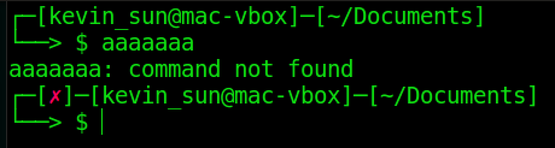

The default bash prompt does its job, but it could be hard to get the information from it. Fortunately, we can customize the prompt so that it displays all kind of information that we need in a clear way. Now I'm going to show you how to do it without bash script programming.
First, go to this site to make a prompt that you like, add the information that you want to show in the prompt, change the color of different components, etc. We are going to change the color later, but you should still add colors to generate the code as placeholders. Then copy the result from "PS1=" to the end in the result box into a txt file.
To see how the new prompt looks in your terminal, open your terminal, and type "$", paste the string that you copied after the $ sign and press enter. If that's good enough for you, then you can go the end of this page to see how to save it permanently.
The color generated by the site doesn't look very well on a 256-color terminal, so we have to change them to 256 Colors. Go to this site to choose colors from 88/256 Colors section, then replace the old color codes by the new codes. The code of the default color is "\e[0m".
Open your terminal, and type "$" then paste the modified PS1 code after the $ sign, press enter to see how it looks.
To save the new prompt, we have to edit the bash configuration file. I recommend you to make a backup of this file before changing it. For MacOS (Sierra v10.12.6), it is the /etc/bashrc file. For Ubuntu (v16.04 LTS), it's the ~/.bashrc file. Open the file and replace all the PS1 code by yours. Save and close the file, restart the terminal, it should work properly.
To make further modifications to your prompt, check out this Bash Prompt HOWTO.
Screenshots:
Before:
After:

This is my prompt, I found a code online and modified a little bit, feel free to try it out, have fun!
PS1="\342\224\214\342\224\200\$([[ \$? != 0 ]] && echo \"[\e[38;5;197m\342\234\227\e[0m]\342\224\200\")[$(if [[ ${EUID} == 0 ]]; then echo '\h'; else echo '\u@\h]'; fi)\342\224\200[\w]\n\342\224\224\342\224\200\342\224\200> \$ \[\033[0m\]"
2018 Jan 18th
Home --> My Blog --> How To -->How to customize your bash prompt